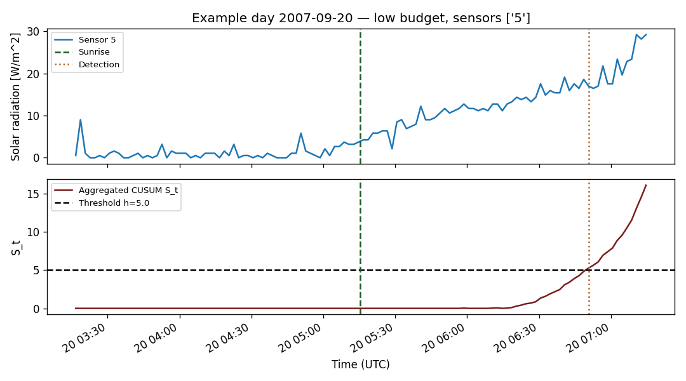

Real-data validation of the resource-constrained multi-sensor change-point detection framework introduced in Covert Change-Point Detection with Resource-Constrained Multi-Sensor Sampling. The system model is always a multi-sensor network with M available sensors; the detector selects an active subset S(t) under sampling and communication constraints. The budget regime controls the cardinality of S(t). The true change point nu_d is the astronomical sunrise on day d; the detector returns a stopping time tau_d from solar-radiation observations. Per-sensor informativeness is summarized by the Gaussian divergence D_i = (mu_1 - mu_0)^2 / (2 sigma^2).
| Field | Value |
|---|---|
| Dataset | SensorScope environmental monitoring dataset |
| Source | https://zenodo.org/records/2654726 |
| Deployment | Grand-St-Bernard |
| Variable | Solar Radiation [W/m^2] |
| Units | W/m^2 |
| Valid sensors (full set) | 2, 25, 28, 29, 3, 31, 32, 4, 5 |
| Valid days | 43 |
| Sampling interval (s) | 120.000 |
Sunrise times computed with astral.sun.sun at latitude 45.8694, longitude 7.1706 (timezone Europe/Zurich). The ground-truth file contains 43 daily records. Detection delays are computed in UTC; signed_delay = tau_d - nu_d.
The unified experiment always loads the full set of valid sensors. A budget policy then chooses the active subset:
Costs C_i and T_i are not available, so unit cost is assumed; this is equivalent to ranking by D_i / (C_i + T_i) with C_i + T_i = 1.
| Field | Value |
|---|---|
| Budget regime | low |
| Description | Low budget. The same multi-sensor network is available, but the sampling policy may activate only one sensor. The budget policy selects the single most informative sensor (top-1 by D_i) from the full valid sensor set. |
| Selection policy | Rank candidate sensors by D_i (Gaussian divergence at sunrise) and pick the top entries allowed by the budget. Costs C_i and T_i are not available, so unit cost is assumed; this is equivalent to ranking by D_i / (C_i + T_i) with C_i + T_i = 1. |
| Unit cost assumption | True |
| All valid sensors | 2, 25, 28, 29, 3, 31, 32, 4, 5 |
| Selected sensors | 5 |
| Number of active sensors | 1 |
| Selection reason | Low-budget policy: selected sensor 5 as the single most informative sensor among 9 valid sensors (D_i=1.0371523658852024). |
| Detector input mode | multi_sensor |
| Rank | Sensor ID | D_i |
|---|---|---|
| 1 | 5 | 1.037 |
| 2 | 25 | 0.827 |
| 3 | 4 | 0.716 |
| 4 | 29 | 0.694 |
| 5 | 32 | 0.631 |
| 6 | 31 | 0.584 |
| 7 | 2 | 0.538 |
| 8 | 28 | 0.523 |
| 9 | 3 | 0.467 |
| Sensor | D_i | mu_0 | mu_1 | sigma^2 | Valid days | Missing rate |
|---|---|---|---|---|---|---|
| 5 | 1.037 | 1.120 | 23.657 | 244.863 | 36 | 0.077 |
The main detector is a multi-sensor one-sided CUSUM that uses fixed global empirical Gaussian parameters per sensor. These parameters (mu_{0,i}, mu_{1,i}, sigma_i^2) are estimated once from the SensorScope sunrise dataset and stored in output/json/sensor_informativeness.json; the same parameters are reused unchanged for every test day. The astronomical sunrise of each day is used only to extract the evaluation window and to score detections; it is not used to estimate any detector parameter in this mode. The per-sensor Gaussian divergence D_i = (mu_{1,i} - mu_{0,i})^2 / (2 sigma_i^2) is computed from the same global parameters used by the detector. At each timestamp, the per-sensor Gaussian log-likelihood ratio is averaged over the active sensors that report a finite reading and accumulated by a one-sided CUSUM:
llr_{i,t} = ((x_{i,t} - mu_{0,i})^2 - (x_{i,t} - mu_{1,i})^2) / (2 sigma_i^2)
L_t = mean_{i in S_t} llr_{i,t}
S_t = max(0, S_{t-1} + L_t)
tau = min { t : S_t >= h }At each timestamp, compute the per-sensor Gaussian log-likelihood ratio llr_{i,t} = ((x_{i,t} - mu_{0,i})^2 - (x_{i,t} - mu_{1,i})^2) / (2 sigma_i^2) using fixed global empirical parameters, then average across active sensors with finite readings. Apply the one-sided CUSUM S_t = max(0, S_{t-1} + L_t) and detect when S_t >= h.
| Parameter | Value |
|---|---|
| Detector mode | global_gaussian_llr |
| Detector name | global_gaussian_llr_cusum_multi_sensor |
| Evidence type | gaussian_log_likelihood_ratio |
| Aggregation | mean_llr |
| Parameter source | global_empirical_sensor_parameters |
| Global parameter file | output/json/sensor_informativeness.json |
| Threshold h | 5.000 |
| Pre window (min) | 120 |
| Post window (min) | 120 |
| Sync freq | 2min |
| Tolerance (min) | 15 |
| Metric | Value |
|---|---|
| valid_days_count | 43 |
| detected_days_count | 34 |
| missed_detection_count | 9 |
| false_alarm_count | 0 |
| mean_signed_delay_minutes | 66.579 |
| median_signed_delay_minutes | 63.561 |
| mean_absolute_error_minutes | 66.579 |
| median_absolute_error_minutes | 63.561 |
| std_signed_delay_minutes | 29.147 |
| min_signed_delay_minutes | 26.389 |
| max_signed_delay_minutes | 115.346 |

| Date | Sunrise (local) | Detected (local) | Signed delay [min] | |Error| [min] | Status | False alarm | Missed | Active sensors | Used | Grid pts |
|---|---|---|---|---|---|---|---|---|---|---|
| 2007-09-13 | 2007-09-13T07:06:38.190498+02:00 | None | n/a | n/a | missed_detection | False | True | 5 | 0 | |
| 2007-09-14 | 2007-09-14T07:07:52.614310+02:00 | None | n/a | n/a | missed_detection | False | True | 5 | 0 | |
| 2007-09-15 | 2007-09-15T07:09:07.087765+02:00 | None | n/a | n/a | missed_detection | False | True | 5 | 0 | |
| 2007-09-16 | 2007-09-16T07:10:21.619640+02:00 | None | n/a | n/a | missed_detection | False | True | 5 | 0 | |
| 2007-09-17 | 2007-09-17T07:11:36.219033+02:00 | None | n/a | n/a | missed_detection | False | True | 5 | 0 | |
| 2007-09-18 | 2007-09-18T07:12:50.895336+02:00 | None | n/a | n/a | missed_detection | False | True | 5 | 0 | |
| 2007-09-19 | 2007-09-19T07:14:05.658195+02:00 | None | n/a | n/a | missed_detection | False | True | 5 | 0 | |
| 2007-09-20 | 2007-09-20T07:15:20.517481+02:00 | 2007-09-20T08:50:41+02:00 | 95.341 | 95.341 | detected | False | False | 5 | 5 | 120 |
| 2007-09-21 | 2007-09-21T07:16:35.483256+02:00 | 2007-09-21T08:58:37+02:00 | 102.025 | 102.025 | detected | False | False | 5 | 5 | 120 |
| 2007-09-22 | 2007-09-22T07:17:50.565738+02:00 | 2007-09-22T09:02:33+02:00 | 104.707 | 104.707 | detected | False | False | 5 | 5 | 120 |
| 2007-09-23 | 2007-09-23T07:19:05.775271+02:00 | 2007-09-23T08:04:28+02:00 | 45.370 | 45.370 | detected | False | False | 5 | 5 | 120 |
| 2007-09-24 | 2007-09-24T07:20:21.122283+02:00 | 2007-09-24T08:28:24+02:00 | 68.048 | 68.048 | detected | False | False | 5 | 5 | 120 |
| 2007-09-25 | 2007-09-25T07:21:36.617257+02:00 | 2007-09-25T08:44:36+02:00 | 82.990 | 82.990 | detected | False | False | 5 | 5 | 120 |
| 2007-09-26 | 2007-09-26T07:22:52.270695+02:00 | 2007-09-26T08:46:35+02:00 | 83.712 | 83.712 | detected | False | False | 5 | 5 | 120 |
| 2007-09-27 | 2007-09-27T07:24:08.093076+02:00 | 2007-09-27T07:50:32+02:00 | 26.398 | 26.398 | detected | False | False | 5 | 5 | 120 |
| 2007-09-28 | 2007-09-28T07:25:24.094824+02:00 | 2007-09-28T08:12:28+02:00 | 47.065 | 47.065 | detected | False | False | 5 | 5 | 120 |
| 2007-09-29 | 2007-09-29T07:26:40.286271+02:00 | 2007-09-29T08:30:24+02:00 | 63.729 | 63.729 | detected | False | False | 5 | 5 | 120 |
| 2007-09-30 | 2007-09-30T07:27:56.677611+02:00 | 2007-09-30T07:54:20+02:00 | 26.389 | 26.389 | detected | False | False | 5 | 5 | 119 |
| 2007-10-01 | 2007-10-01T07:29:13.278867+02:00 | 2007-10-01T08:00:32+02:00 | 31.312 | 31.312 | detected | False | False | 5 | 5 | 120 |
| 2007-10-02 | 2007-10-02T07:30:30.099847+02:00 | 2007-10-02T08:52:27+02:00 | 81.948 | 81.948 | detected | False | False | 5 | 5 | 120 |
| 2007-10-03 | 2007-10-03T07:31:47.150105+02:00 | 2007-10-03T07:58:27+02:00 | 26.664 | 26.664 | detected | False | False | 5 | 5 | 120 |
| 2007-10-04 | 2007-10-04T07:33:04.438893+02:00 | 2007-10-04T08:36:28+02:00 | 63.393 | 63.393 | detected | False | False | 5 | 5 | 120 |
| 2007-10-05 | 2007-10-05T07:34:21.975123+02:00 | 2007-10-05T08:10:24+02:00 | 36.034 | 36.034 | detected | False | False | 5 | 5 | 120 |
| 2007-10-06 | 2007-10-06T07:35:39.767316+02:00 | 2007-10-06T08:56:23+02:00 | 80.721 | 80.721 | detected | False | False | 5 | 5 | 120 |
| 2007-10-07 | 2007-10-07T07:36:57.823564+02:00 | None | n/a | n/a | missed_detection | False | True | 5 | 5 | 120 |
| 2007-10-08 | 2007-10-08T07:38:16.151474+02:00 | 2007-10-08T09:32:20+02:00 | 114.064 | 114.064 | detected | False | False | 5 | 5 | 120 |
| 2007-10-09 | 2007-10-09T07:39:34.758125+02:00 | 2007-10-09T08:10:15+02:00 | 30.671 | 30.671 | detected | False | False | 5 | 5 | 120 |
| 2007-10-10 | 2007-10-10T07:40:53.650020+02:00 | 2007-10-10T08:38:11+02:00 | 57.289 | 57.289 | detected | False | False | 5 | 5 | 120 |
| 2007-10-11 | 2007-10-11T07:42:12.833029+02:00 | 2007-10-11T09:18:22+02:00 | 96.153 | 96.153 | detected | False | False | 5 | 5 | 120 |
| 2007-10-12 | 2007-10-12T07:43:32.312346+02:00 | 2007-10-12T08:42:19+02:00 | 58.778 | 58.778 | detected | False | False | 5 | 5 | 120 |
| 2007-10-13 | 2007-10-13T07:44:52.092430+02:00 | 2007-10-13T08:22:13+02:00 | 37.348 | 37.348 | detected | False | False | 5 | 5 | 121 |
| 2007-10-14 | 2007-10-14T07:46:12.176956+02:00 | 2007-10-14T09:34:09+02:00 | 107.947 | 107.947 | detected | False | False | 5 | 5 | 120 |
| 2007-10-15 | 2007-10-15T07:47:32.568759+02:00 | 2007-10-15T09:34:18+02:00 | 106.757 | 106.757 | detected | False | False | 5 | 5 | 120 |
| 2007-10-16 | 2007-10-16T07:48:53.269781+02:00 | 2007-10-16T09:44:14+02:00 | 115.346 | 115.346 | detected | False | False | 5 | 5 | 121 |
| 2007-10-17 | 2007-10-17T07:50:14.281012+02:00 | 2007-10-17T08:40:10+02:00 | 49.929 | 49.929 | detected | False | False | 5 | 5 | 100 |
| 2007-10-18 | 2007-10-18T07:51:35.602438+02:00 | 2007-10-18T08:34:05+02:00 | 42.490 | 42.490 | detected | False | False | 5 | 5 | 122 |
| 2007-10-19 | 2007-10-19T07:52:57.232986+02:00 | None | n/a | n/a | missed_detection | False | True | 5 | 5 | 120 |
| 2007-10-20 | 2007-10-20T07:54:19.170461+02:00 | 2007-10-20T08:58:16+02:00 | 63.947 | 63.947 | detected | False | False | 5 | 5 | 123 |
| 2007-10-21 | 2007-10-21T07:55:41.411496+02:00 | 2007-10-21T08:28:13+02:00 | 32.526 | 32.526 | detected | False | False | 5 | 5 | 120 |
| 2007-10-22 | 2007-10-22T07:57:03.951493+02:00 | 2007-10-22T09:12:19+02:00 | 75.251 | 75.251 | detected | False | False | 5 | 5 | 108 |
| 2007-10-23 | 2007-10-23T07:58:26.784564+02:00 | 2007-10-23T08:40:17+02:00 | 41.837 | 41.837 | detected | False | False | 5 | 5 | 120 |
| 2007-10-24 | 2007-10-24T07:59:49.903480+02:00 | 2007-10-24T09:48:18+02:00 | 108.468 | 108.468 | detected | False | False | 5 | 5 | 120 |
| 2007-10-25 | 2007-10-25T08:01:13.299615+02:00 | 2007-10-25T09:00:16+02:00 | 59.045 | 59.045 | detected | False | False | 5 | 5 | 120 |